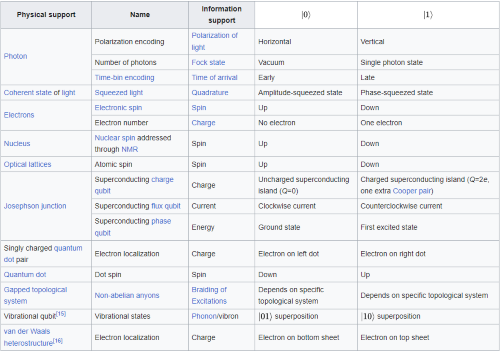
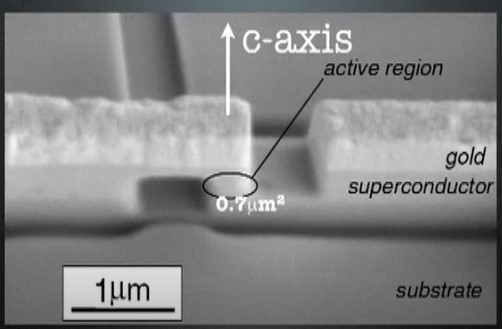

بناء الكيوبت
لبناء كيوبت، نحتاج إلى كائن يمكنه الوصول إلى حالة تراكب كمي(الوضع الفائق) بين حالتين، والنواة الذرية هي نوع واحد من الكيوبتات ، ويمكن أن يشير اتجاه عزمه المغناطيسي (“الدوران”) في اتجاهات مختلفة، لأعلى أو لأسفل فيما يتعلق بالمجال المغناطيسي. يكمن التحدي في وضع تلك الذرة المفردة ثم معالجتها.
فكرة أخرى هي تجريد الذرة من الإلكترون وتحويله إلى أيون، ثم يمكن استخدام المجالات الكهرومغناطيسية لتعليق الأيونات في الفضاء الحر، وإطلاق أشعة الليزر عليه لتغيير حالته.
يمكن أيضًا أن يكون التيار في حلقة من معدن فائق التوصيل في حالة تراكب، بين اتجاه عقارب الساعة وعكس اتجاه عقارب الساعة، تمامًا مثل جهاز الجري الصغير الذي يعمل للأمام وللخلف في نفس الوقت. يمكن أن يكون فوتون من الضوء في حالة تراكب في الاتجاه الذي يلوح به، حيث تقوم بعض المجموعات بتجميع الدوائر الكمومية عن طريق إرسال فوتونات حول متاهة من الألياف الضوئية والمرايا.
الجدول المرفق يوضح ما هي الطرق التي بامكاننا صنع كيو بت من خلالها وما هي دالة القياس الخاصة لكل منها
معلومة
ملاحظة بأن الجدول المرفق قد لا يشمل جميع الطرق التي بامكانك صنع كيو بت من خلالها.

احدى الطرق المذكورة اعلاه هي مقاطعة جوزفين. يتم إنشاء تقاطع جوزيفين عن طريق وضع طبقة رقيقة من مادة غير فائقة التوصيل بين طبقتين من مادة فائقة التوصيل. سميت الأجهزة على اسم بريان جوزيفين ، الذي توقع في عام 1962 أن أزواجًا من الإلكترونات فائقة التوصيل يمكن أن "تنفق" مباشرة عبر الحاجز غير الفائق التوصيل من موصل فائق إلى آخر. كما توقع الشكل الدقيق لعلاقات التيار والجهد للتقاطع. أثبت العمل التجريبي أنه كان على حق ، وحصل جوزيفين على جائزة نوبل في الفيزياء عام 1973 عن عمله. [1] 